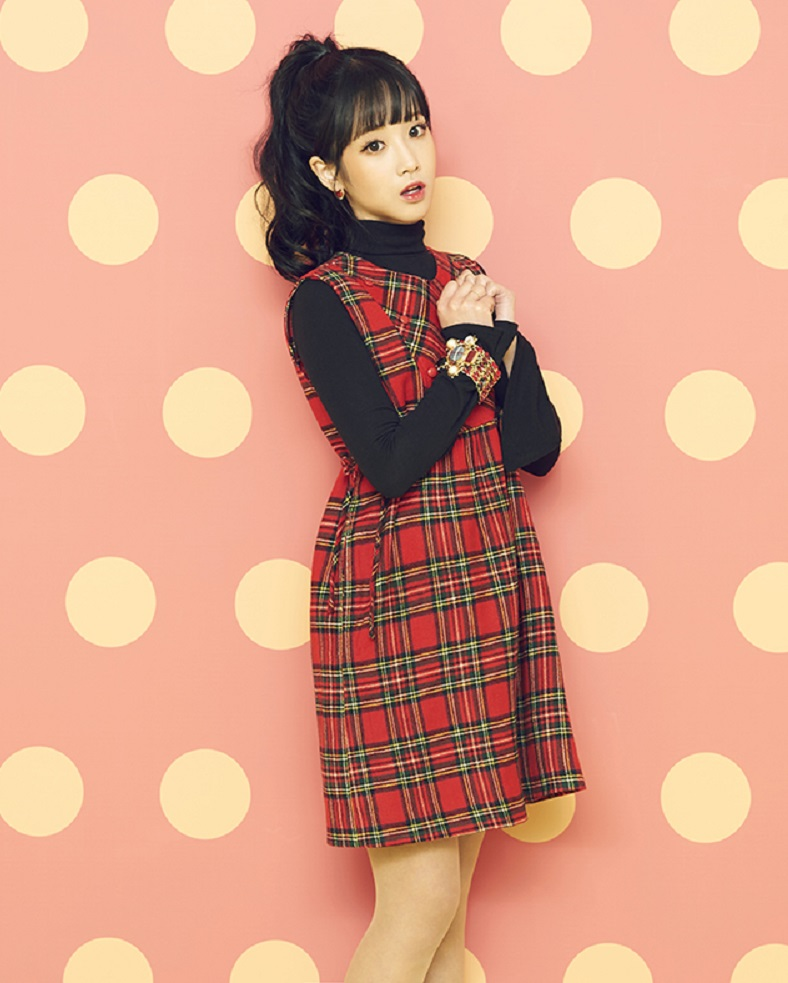
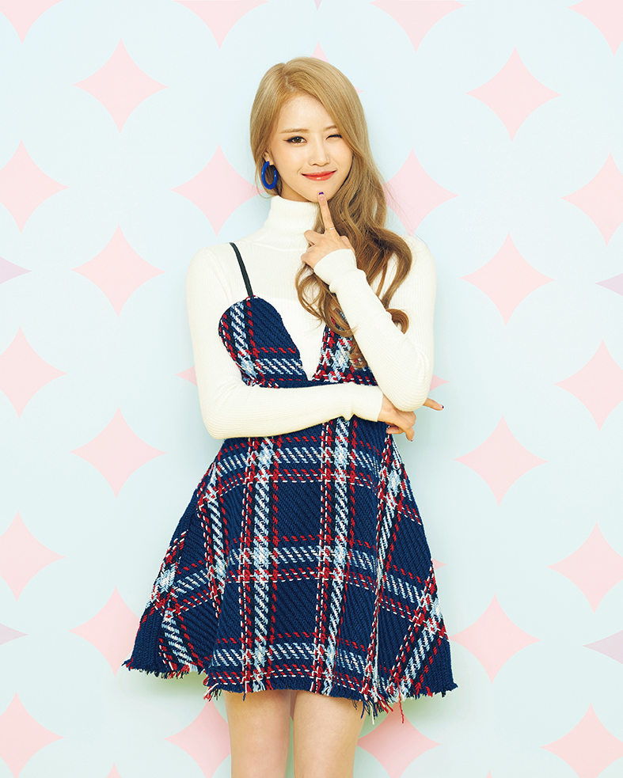
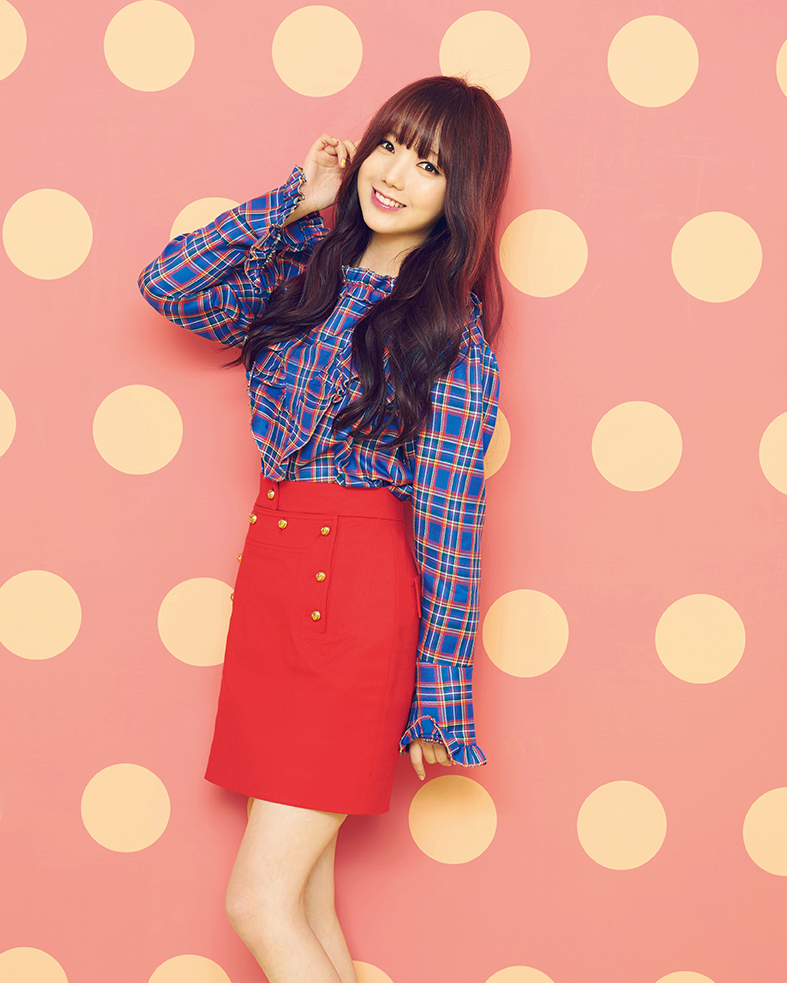
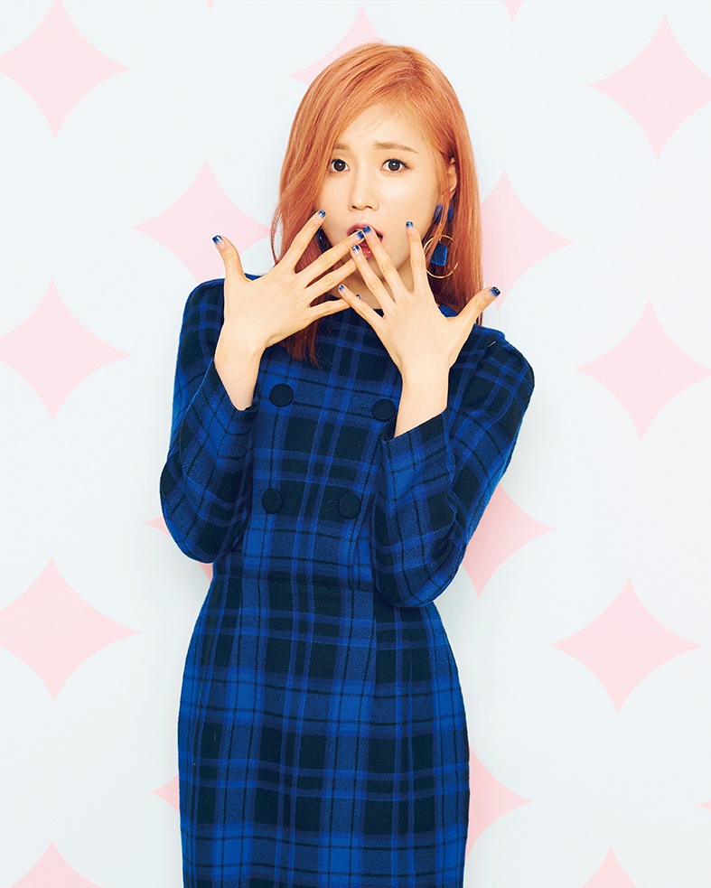
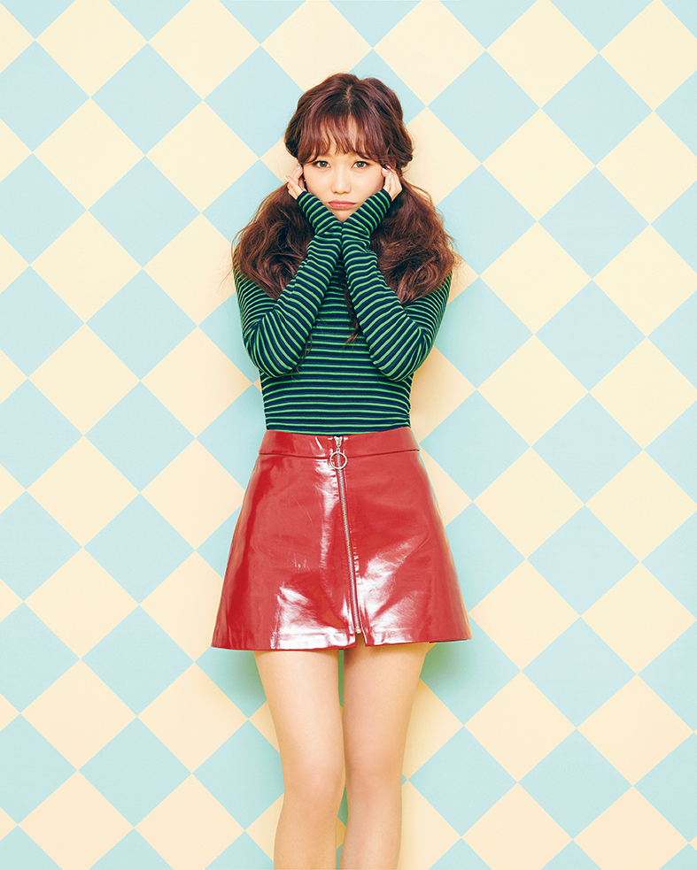
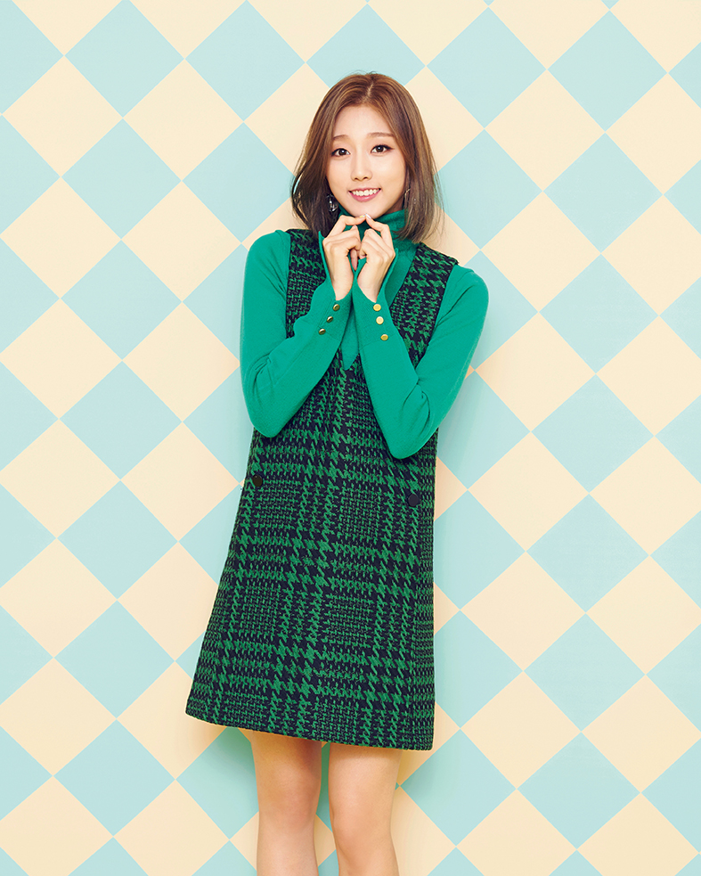

☰
Members

Baby Soul (베이비소울)
Baby Soul (베이비소울) / Lee Soojung (이수정)
Leader and Main Vocal / 1992 July 6 / Type O / Gwangju, South Korea
Leader and Main Vocal / 1992 July 6 / Type O / Gwangju, South Korea

Jiae (지애)
Jiae (지애) / Yoo Jiae (유지애)
Sub Vocal / 1993 May 21 / Type A / Seoul, South Korea
Sub Vocal / 1993 May 21 / Type A / Seoul, South Korea

Jisoo (지수)
Jisoo (지수) / Seo Jisoo (서지수)
Sub Vocal and Main Dancer / 1994 February 11 / Type O / Incheon, South Korea
Sub Vocal and Main Dancer / 1994 February 11 / Type O / Incheon, South Korea

Mijoo (미주)
Mijoo (미주) / Lee Mijoo (이미주)
Sub Vocal and Main Dancer / 1994 September 23 / Type O / North Chungcheong, South Korea
Sub Vocal and Main Dancer / 1994 September 23 / Type O / North Chungcheong, South Korea

Kei (케이)
Kei (케이) / Kim Jiyeon (김지연)
Main Vocal / 1995 March 20 / Type O / Incheon, South Korea
Main Vocal / 1995 March 20 / Type O / Incheon, South Korea

Jin (진)
Jin (진) / Park Myungeun (박명은)
Main Vocal / 1996 June 12 / Type B / Busan, South Korea
Main Vocal / 1996 June 12 / Type B / Busan, South Korea

Sujeong (수정)
Sujeong (수정) / Ryu Soojung (류수정)
Lead Vocal / 1997 November 19 / Type B / Daejeon, South Korea
Lead Vocal / 1997 November 19 / Type B / Daejeon, South Korea

❮
❯
Yein (예인)
Yein (예인) / Jung Yein (정예인)
Sub Vocal / 1998 June 4 / Type B / Incheon, South Korea
Sub Vocal / 1998 June 4 / Type B / Incheon, South Korea